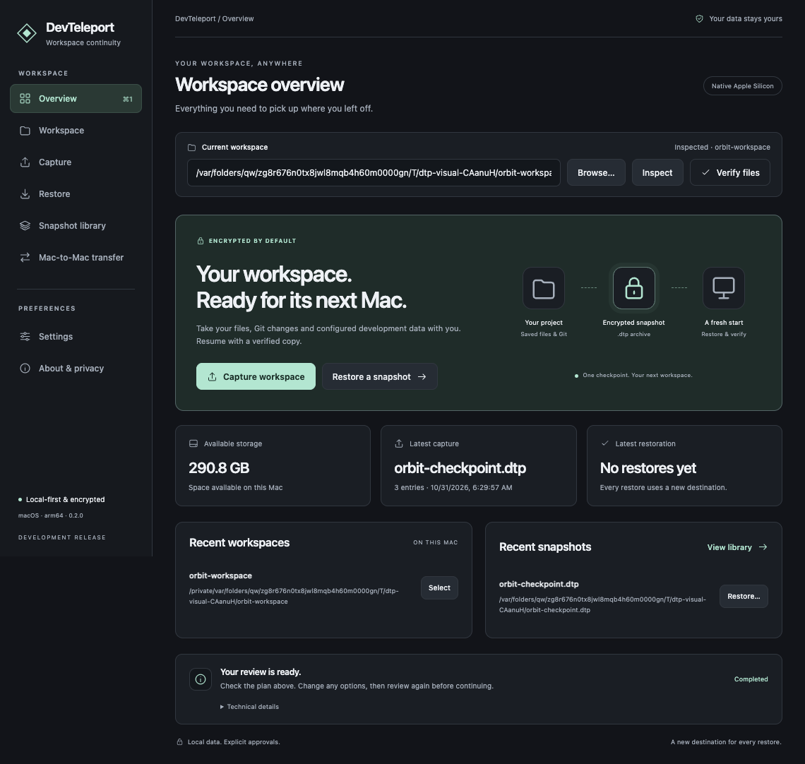

Capture your context
Inspect saved files and Git state. Opt in to configured databases and volumes. Preview the capture, then encrypt with your passphrase.
REVIEW → ENCRYPT → AUTHENTICATE
The code. The changes. The development data.
Capture your saved workspace in one encrypted snapshot and pick up
on another machine.
npm install -g devteleport
Native Apple Silicon desktop · CLI for macOS & Linux
A Git clone is a starting point. DevTeleport also carries your saved local changes and explicitly configured development data, with a review before every capture and restore.

Actual app screenshots, using a disposable example workspace.Graphite & mint. Light & dark. Built for focus.
Inspect your project, review what travels, and manage your local snapshot library.
The same capture, restore, diff and verification workflow from your terminal.
Capture saved work, reopen restored projects and track progress in a trusted workspace.
From the project on this Mac to an independent workspace on the next. The original source doesn’t need to stay around after a verified restore.
Inspect saved files and Git state. Opt in to configured databases and volumes. Preview the capture, then encrypt with your passphrase.
REVIEW → ENCRYPT → AUTHENTICATE
Move the encrypted .dtp file using export/import or
approved TLS pairing on your local network. No hosted relay or
cloud account.
Review a new destination, unlock the archive and reconstruct your files. Verify against the original snapshot before you get back to work.
NEW DESTINATION → VERIFIED COPYCapture the pieces that make your local project yours. Optional data adapters are explicit, configured and reviewed.
Source files, lockfiles, runtime metadata and saved editor files. Known credential paths and dependency directories are excluded.
Standalone Git objects, index and HEAD, plus staged, unstaged, deleted and untracked saved changes. Keep the work you haven’t committed.
feature/next-idea + local changes
Explicit local database dumps, version checks and restore into an empty local development database using a trusted external mapping.
Database setupStopped, plain local named volumes and Compose configuration. Review images, mounts and architecture before approving service startup.
Volume requirementsA checkpoint of saved state. Running processes, open connections, unsaved buffers, debugger sessions and arbitrary extension state don’t travel. Provision dependencies and excluded secrets separately. Linked worktrees, submodules and nested repositories need separate preparation.
Bring saved code, uncommitted Git changes and selected local development data to a fresh machine. Review tool compatibility before installing dependencies.
MACHINE MIGRATIONMove a checkpoint between your desktop and laptop using an encrypted file. Direct LAN pairing is available experimentally with explicit peer approval.
WORKSPACE HANDOFFSave a checkpoint before a refactor or experiment. Compare it with your current folder, or restore into a new directory while keeping your existing work.
LOCAL CHECKPOINTSHand a trusted collaborator a reviewed, encrypted development snapshot. Share its passphrase separately and optionally verify provenance with an Ed25519 signature.
TRUSTED COLLABORATIONInstall the standalone CLI with Node.js 24+ on macOS or Linux. No desktop app or repository clone required.
View on npm# Install once · Node.js 24+
npm install -g devteleport
# Discover tools and inspect your saved workspace
devteleport diagnostics
devteleport inspect ./my-project
# Preview what will travel
devteleport capture --root ./my-project --name my-project --output ./snapshots --dry-run
# Create your encrypted checkpoint
devteleport capture --root ./my-project --name my-project --output ./snapshots
Add a devteleport.json to your project for custom
exclusions, development databases and named volumes. Credentials
stay in protected environment variables.
Use --include-db or
--include-volumes when capturing. Restoring these
components requires separate approvals and a trusted destination
mapping outside the snapshot.
{
"exclude": ["dist", "coverage"],
"databases": [{
"name": "app",
"connectionEnv": "DEV_DATABASE_URL",
"excludeTables": ["public.private_events"]
}],
"volumes": [{
"name": "uploads",
"volume": "project_uploads"
}]
}No cloud account. No paid API. No analytics or telemetry. Encryption happens locally, before your snapshot leaves your machine.
Explore the security modelAES-256-GCM protects snapshots. Format 2 authenticates the entire archive before metadata parsing or extraction, then checks payload hashes before publication.
Restores use new destinations. Normal restoration executes no project code. Dependency installation, service startup, database restore and volume restore require explicit approval.
Known credential paths and high-confidence secrets are excluded with review records. Detection isn’t exhaustive; databases and volumes are encrypted, not automatically scrubbed.
Optional Ed25519 signatures establish provenance relative to an independently trusted key. There is no password recovery, cross-system rollback or independent security audit claim.
Clear expectations for your next workspace.
Troubleshooting ↗The desktop release targets native Apple Silicon Macs (M1 and newer), with its own bundled engine runtime. The public CLI needs Node.js 24+ on macOS or Linux. Git, PostgreSQL tools and Docker are needed only for operations that use them. Windows and physical Intel desktop acceptance are not certified.
Version 0.2.0 is a development release candidate. The app has an ad-hoc code/resource signature, but is not Apple Developer ID signed or notarized. macOS may block a downloaded installation. Do not disable system-wide security protections. Signing, fresh-install acceptance, physical two-Mac validation and secure update installation remain release gates. Read distribution status ↗
DevTeleport reconstructs saved state. It does not migrate process memory, open connections, unsaved buffers, terminal history or live debugger sessions. Stop source writers before capture: files, databases and volumes are not captured in one cross-system transaction. Dependencies must be installed for the target architecture.
Streaming format 2 allows up to 16 GiB per file/database payload, 32 GiB aggregate, 50,000 entries and 16 MiB metadata. The volume adapter separately limits archives to 32 MiB compressed / 128 MiB expanded. Private plaintext staging needs additional free disk space. Capture on hard-link-capable storage such as APFS; export the encrypted file to unsupported external filesystems. Format details ↗
Yes, with manual TLS 1.3 pairing, an approved peer, certificate fingerprint comparison and a protected pairing descriptor. Interrupted transfers support resume with renewed pairing. The receiver never obtains the snapshot passphrase and never executes contents. LAN transfer remains experimental pending physical two-Mac validation; automatic discovery is not implemented. Transfer guide ↗
Package the VSIX from source with
npm run package:extension, then use “Extensions:
Install from VSIX…” in VS Code. Install the CLI on PATH or
configure absolute executable paths in user/machine settings. The
extension respects workspace trust and supports saved-file
capture, reopen, history, verification and cancellation.
Extension setup ↗
Private staging journals record interrupted phases.
devteleport recover ./snapshots inspects recovery
evidence; cleanup requires a reviewed, explicit approval.
Filesystem, PostgreSQL and Docker work are separate, so an
approved operation can leave earlier successful components intact.
There is no distributed rollback.
Recovery commands ↗
Open source. Local-first. Yours to explore.
Development release candidate. Review the release notes and platform requirements before using snapshots for important work. Verify a restored workspace before deleting its original.
Current status ↗